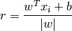
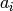

09 - Support Vector Machines¶
Perceptron Revisited: Linear Separators¶
In perceptrons we linearly separate the feature space. Points of one side of the line are classified differently to points on the other side.
However there are many lines which could separate the points correctly. So which of the linear separators is optimal?
Classification Margin¶
Te distance from an example point  and the linear separator is:
and the linear separator is:

where  is the vector which represents the separator and
is the vector which represents the separator and  is the bias.
is the bias.
The examples which are closest to the linear separator are called support vectors.
The margin  of the linear separator is the distance between the linear separator and its support vectors.
of the linear separator is the distance between the linear separator and its support vectors.
Maximum Margin Classification¶
Once we have the linear separator, the support vectors and the margin, we need to maximise the margin according to intuition and PAC (Probably Approximately Correct) theory.
This means that the line will divide the feature space as centrally as possible.
The Optimisation Problem Solution¶
By solving something called the optimisation problem we will have identified the support vectors.
Soft Margin Classification¶
What happens if the training set is not linearly separable?
Slack variables can be added to allow misclassification of difficult or noisy examples, resulting in a so called soft margin.
Linear SVMs: Overview¶
This classifier (SVM, Support Vector Machines) is a separating hyperplane. The most “important” training points are support vectors; they define the hyperplane.
Quadratic optimisation algorithms can identify which training points are support vectors with non-zero Lagrangian multipliers .
Both in the dual formulation of the problem and in the solution training points appear only inside inner products.
Non-Linear SVMs¶
Datasets that are linearly separable with some noise work out great:
If the data is not linearly separable like this:
We can map the data to a higher-dimensional space:
In this form we can linearly separate the different classes.
Non-Linear SVMs: Feature Spaces¶
The general idea is that the original feature space can always be mapped to some higher dimensional feature space where the training set is separable
The “Kernel Trick”¶
The linear classifier relies on the inner product between vectors .
If every datapoint is mapped into high-dimensional space via some transformation  such that , the inner product becomes:
such that , the inner product becomes:
A kernel function is a function that is equivalent to an inner product in some feature space. A kernel function implicitly maps data to a high-dimensional space (without the need to compute each  explicitly).
explicitly).
What Functions are Kernels?¶
For some functions checking that can be cumbersome.
Mercer’s theorem says:
“Every semi-positive definite symmetric function is a kernel”
Unique Feature of SVM’s and Kernel Methods¶
- Are explicitly based on a theoretical model of learning
- Come with theoretical guarantees about their performance
- Have a modular design that allows one to separately implement and design their components
- Are not affected by local minima
- Do not suffer from the curse of dimensionality